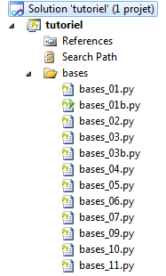

3. Noções básicas
 |
3.1. Um exemplo de programa em Python
Abaixo, encontra-se um programa que apresenta as primeiras características do Python.
# -*- coding=utf-8 -*-
# ----------------------------------
def affiche(chaine):
# exibe a cadeia
print "chaine=%s" % (chaine)
# ----------------------------------
def afficheType(variable):
# exibe o tipo de variável
print "type[%s]=%s" % (variable,type(variable))
# ----------------------------------
def f1(param):
# soma 10 ao parâmetro
return param+10
# ----------------------------------
def f2():
# retorna 3 valores
return ("un",0,100);
# -------------------------------- programa principal ------------------------------------
# isto é um comentário
# variável utilizada sem ter sido declarada
nom="dupont"
# uma saída para o ecrã
print "nom=%s" % (nom)
# uma lista com elementos de tipos diferentes
liste=["un","deux",3,4]
# o seu número de elementos
n=len(liste)
# um ciclo
for i in range(n):
print "liste[%d]=%s" % (i,liste[i])
# inicialização de duas variáveis com uma tupla
(chaine1,chaine2)=("chaine1","chaine2")
# concatenação das duas cadeias
chaine3=chaine1+chaine2
# exibição do resultado
print "[%s,%s,%s]" % (chaine1,chaine2,chaine3)
# utilização de uma função
affiche(chaine1)
# o tipo de uma variável pode ser conhecido
afficheType(n)
afficheType(chaine1)
afficheType(liste)
# o tipo de uma variável pode mudar durante a execução
n="a change"
afficheType(n)
# uma função pode devolver um resultado
res1=f1(4)
print "res1=%s" % (res1)
# uma função pode devolver uma lista de valores
(res1,res2,res3)=f2()
print "(res1,res2,res3)=[%s,%s,%s]" % (res1,res2,res3)
# esses valores poderiam ter sido armazenados numa variável
liste=f2()
for i in range(len(liste)):
print "liste[%s]=%s" % (i, liste[i])
# testes
for i in range(len(liste)):
# apenas apresenta as cadeias de caracteres
if (type(liste[i])=="str"):
print "liste[%s]=%s" % (i,liste[i])
# outros testes
for i in range(len(liste)):
# apenas apresenta os números inteiros >10
if (type(liste[i])=="int" and liste[i]>10):
print "liste[%s]=%s" % (i,liste[i])
# um ciclo while
liste=(8,5,0,-2,3,4)
i=0
somme=0
while(i<len(liste) and liste[i]>0):
print "liste[%s]=%s" % (i,liste[i])
somme+=liste[i] #soma=soma+t[i]
i+=1 #i=i+1
print "somme=%s" % (somme)
# fim do programa
Nota:
- linha 1: um comentário específico que serve para declarar o tipo de codificação do script, neste caso UTF-8. Isto depende do editor de texto utilizado. Aqui, com o Notepad++:
 |
- linha 4: a palavra-chave def define uma função;
- linhas 5-6: o conteúdo da função. Está indentado à direita por uma tabulação. É esta indentação, associada ao caractere : da instrução def, que define o conteúdo da função. Isto aplica-se a todas as instruções com conteúdo: if, else, while, for, try, except;
- linha 12: o Python gere internamente o tipo das variáveis. É possível saber o tipo de uma variável com a função type(variable), que devolve uma variável do tipo «type». A expressão «%s» % (type(variável)) é uma cadeia de caracteres que representa o tipo da variável;
- linha 25: o programa principal. Este surge após a definição de todas as funções do script. O seu conteúdo não está indentado;
- linha 28: em Python, não se declaram variáveis. O Python distingue maiúsculas de minúsculas. A variável Nom é diferente da variável nom. Uma cadeia de caracteres pode ser colocada entre aspas " ou apóstrofos '. Assim, pode escrever-se 'dupont' ou "dupont";
- linha 31: a expressão "xxxx%syyyy%szzzz" % (100, 200) é a cadeia de caracteres "xxxx100yyy200szzzz", em que cada %s foi substituído por um elemento da tupla. %s é o formato de exibição das cadeias de caracteres. Existem outros formatos;
- linha 34: existe uma diferença entre uma tupla (1,2,3) (repare nos parênteses) e uma lista [1,2,3] (repare nos colchetes). A tupla é imutável, enquanto a lista é mutável. Em ambos os casos, o elemento n.º i é denotado por [i];
- linha 40: range(n) é a tupla (0,1,2,...,n-1);
- linha 74: len(var) é o número de elementos da coleção var (tupla, lista, dicionário, ...);
- linha 86: os outros operadores booleanos são or e not.
Os resultados apresentados no ecrã são os seguintes:
3.2. Mudanças de tipos
Aqui, estamos interessados nas alterações de tipos com dados do tipo str (cadeia de caracteres), int (inteiro), float (real) e bool (booleano).
# -*- coding=utf-8 -*-
# mudanças de tipo
# int --> str, float, bool
x=4
print x, type(x)
x=str(4)
print x, type(x)
x=float(4)
print x, type(x)
x=bool(4)
print x, type(x)
# bool --> int, float, str
x=True
print x, type(x)
x=int(True)
print x, type(x)
x=float(True)
print x, type(x)
x=str(True)
print x, type(x)
# str --> int, float, bool
x="4"
print x, type(x)
x=int("4")
print x, type(x)
x=float("4")
print x, type(x)
x=bool("4")
print x, type(x)
# float → str, int, bool
x=4.32
print x, type(x)
x=str(4.32)
print x, type(x)
x=int(4.32)
print x, type(x)
x=bool(4.32)
print x, type(x)
# gestão de erros de conversão de tipos
try:
x=int("abc")
print x, type(x)
except ValueError, erreur:
print erreur
# casos diversos do booleano
x=bool("abc")
print x, type(x)
x=bool("")
print x, type(x)
x=bool(0)
print x, type(x)
x=None
print x, type(x)
x=bool(None)
print x, type(x)
São possíveis várias conversões de tipo. Algumas podem falhar, como as das linhas 45-49, que tentam converter a cadeia «abc» num número inteiro. O erro foi tratado com uma estrutura try / except. A forma geral desta estrutura é a seguinte:
try:
actions
except Exception, Message:
actions
finally:
actions
Se uma das ações do bloco «try» lançar uma exceção (indicar um erro), o controlo passa imediatamente para a cláusula «except». Se as ações do bloco «try» não lançarem nenhuma exceção, a cláusula «except» é ignorada. Os atributos Exception e Message da instrução except são opcionais. Quando estão presentes, Exception especifica o tipo de exceção interceptada pela instrução except e Message contém a mensagem de erro associada à exceção. Podem existir várias instruções except, caso se pretenda gerir diferentes tipos de exceção no mesmo try.
A instrução finally é opcional. Se estiver presente, as ações da instrução finally são sempre executadas, independentemente de ter ocorrido ou não uma exceção.
Voltaremos a abordar as exceções um pouco mais adiante.
As linhas 52-61 mostram várias tentativas de converter dados dos tipos str, int, float e NoneType em valores booleanos. Isso é sempre possível. As regras são as seguintes:
- bool(int i) tem o valor False se i for 0, e True em todos os outros casos;
- bool(float f) é igual a False se f for igual a 0,0, e a True em todos os outros casos;
- bool(str cadeia) vale False se cadeia tiver 0 caracteres, True em todos os outros casos;
- bool(None) é igual a False. None é um valor especial que significa que a variável existe, mas não tem valor.
Os resultados no ecrã são os seguintes:
3.3. O âmbito das variáveis
# -*- coding=utf-8 -*-
# âmbito das variáveis
def f1():
# utiliza-se a variável global i
global i
i+=1
j=10
print "f1[i,j]=[%s,%s]" % (i,j)
def f2():
# utiliza-se a variável global i
global i
i+=1
j=20
print "f2[i,j]=[%s,%s]" % (i,j)
def f3():
# utilização da variável local i
i=1
j=30
print "f3[i,j]=[%s,%s]" % (i,j)
# testes
i=0
j=0 # estas duas variáveis só são conhecidas por uma função f
# a menos que esta as declare explicitamente através da instrução global
# que pretende utilizá-las
f1()
f2()
f3()
print "test[i,j]=[%s,%s]" % (i,j)
Resultados
Notas:
- o script mostra a utilização da variável i, declarada como global nas funções f1 e f2. Neste caso, o programa principal e as funções f1 e f2 partilham a mesma variável i.
3.4. Listas, tuplas e dicionários
3.4.1. Listas unidimensionais
# -*- coding=utf-8 -*-
# listas unidimensionais
# inicialização
list1=[0,1,2,3,4,5]
# iteração - 1
print "list1 a %s elements" % (len(list1))
for i in range(len(list1)):
print "list1[%s]=%s" % (i, list1[i])
list1[1]=10;
# iteração - 2
print "list1 a %s elements" % (len(list1))
for element in list1:
print element
# adição de dois elementos
list1[len(list1):]=[10,11]
print ("%s") % (list1)
# eliminação dos dois últimos elementos
list1[len(list1)-2:]=[]
print ("%s") % (list1)
# adição de um tuplo ao início da lista
list1[:0]=[-10, -11, -12]
print ("%s") % (list1)
# inserção de dois elementos a meio da lista
list1[3:3]=[100,101]
print ("%s") % (list1)
# remoção de dois elementos no meio da lista
list1[3:4]=[]
print ("%s") % (list1)
Notas:
- a notação matriz[i:j] designa os elementos de i a j-1 da matriz;
- a notação [i:] designa os elementos i e seguintes da matriz;
- a notação [:i] designa os elementos de 0 a i-1 da matriz;
- linha 20: print (%s) % (list1) apresenta a cadeia de caracteres: «[ list1[0], list1[2], ..., list1[n-1]]».
Resultados
O código anterior pode ser escrito de forma diferente (bases_03b) utilizando determinados métodos das listas:
# -*- coding=utf-8 -*-
# listas unidimensionais
# inicialização
list1=[0,1,2,3,4,5]
# percurso - 1
print "list1 a %s elements" % (len(list1))
for i in range(len(list1)):
print "list1[%s]=%s" % (i, list1[i])
list1[1]=10
# percurso - 2
print "list1 a %s elements" % (len(list1))
for element in list1:
print element
# adição de dois elementos
list1.extend([10,11])
print ("%s") % (list1)
# eliminação dos dois últimos elementos
del list1[len(list1)-2:]
print ("%s") % (list1)
# adição de um tuplo no início da lista
for i in (-12, -11, -10):
list1.insert(0,i)
print ("%s") % (list1)
# inserção no meio da lista
for i in (101,100):
list1.insert(3,i)
print ("%s") % (list1)
# remoção a meio da lista
del list1[3:4]
print ("%s") % (list1)
Os resultados obtidos são os mesmos que com a versão anterior.
3.4.2. O dicionário
# -*- coding=utf-8 -*-
def existe(conjoints,mari):
# verifica se a chave «mari» existe no dicionário «conjuges»
if(conjoints.has_key(mari)):
print "La cle [%s] existe associee a la valeur [%s]" % (mari, conjoints[mari])
else:
print "La cle [%s] n'existe pas" % (mari)
# ----------------------------- Principal
# dicionários
conjoints={"Pierre":"Gisele", "Paul":"Virginie", "Jacques":"Lucette","Jean":""}
# percurso - 1
print "Nombre d'elements du dictionnaire : %s " % (len(conjoints))
for (cle,valeur) in conjoints.items():
print "conjoints[%s]=%s" % (cle,valeur)
# lista das chaves do dicionário
print "liste des cles-------------"
cles=conjoints.keys()
print ("%s") % (cles)
# lista de valores do dicionário
print "liste des valeurs------------"
valeurs=conjoints.values()
print ("%s") % (valeurs)
# pesquisa de uma chave
existe(conjoints,"Jacques")
existe(conjoints,"Lucette")
existe(conjoints,"Jean")
# eliminação de uma chave-valor
del (conjoints["Jean"])
print "Nombre d'elements du dictionnaire : %s " % (len(conjoints))
print ("%s") % (conjoints)
Notas:
- linha 17: conjoints.items() devolve a lista de pares (chave, valor) do dicionário como conjuntos;
- linha 22: conjoints.keys() devolve as chaves do dicionário «conjoints»;
- linha 27: conjoints.values() devolve os valores do dicionário «conjoints»;
- linha 7: conjoints.has_key(mari) devolve True se a chave mari existir no dicionário conjoints, False caso contrário;
- linha 38: um dicionário pode ser apresentado numa única linha.
3.4.3. Os tuplos
# -*- coding=utf-8 -*-
# tuplos
# inicialização
tab1=(0,1,2,3,4,5)
# iteração - 1
print "tab1 a %s elements" % (len(tab1))
for i in range(len(tab1)):
print "tab1[%s]=%s" % (i, tab1[i])
# iteração - 2
print "tab1 a %s elements" % (len(tab1))
for element in tab1:
print element
# alteração de um elemento
tab1[0]=-1
Notas:
- linhas 15-18 dos resultados: mostram que um tuplo não pode ser alterado.
3.4.4. Listas multidimensionais
# -*- coding=utf-8 -*-
# listas multidimensionais
# inicialização
multi=[[0,1,2], [10,11,12,13], [20,21,22,23,24]]
# percurso
for i1 in range(len(multi)):
for i2 in range(len(multi[i1])):
print "multi[%s][%s]=%s" % (i1,i2,multi[i1][i2])
# dicionários multidimensionais
# inicialização
multi={"zero":[0,1], "un":[10,11,12,13], "deux":[20,21,22,23,24]}
# navegação
for (cle,valeur) in multi.items():
for i2 in range(len(multi[cle])):
print "multi[%s][%s]=%s" % (cle,i2,multi[cle][i2])
3.4.5. Ligações entre cadeias e listas
# -*- coding=Utf-8 -*-
# conversão de cadeia de caracteres em lista
chaine='1:2:3:4'
tab=chaine.split(':')
print type(tab)
# exibição de lista
print "tab a %s elements" % (len(tab))
print ("%s") % (tab)
# da lista para cadeia
chaine2=":".join(tab)
print "chaine2=%s" % (chaine2)
# vamos adicionar um campo vazio
chaine+=":"
print "chaine=%s" % (chaine)
tab=chaine.split(":")
# exibição da lista
print "tab a %s elements" % (len(tab))
print ("%s") % (tab)
# vamos adicionar novamente um campo vazio
chaine+=":"
print "chaine=%s" % (chaine)
tab=chaine.split(":")
# exibição da lista
print "tab a %s elements" % (len(tab))
print ("%s") % (tab)
Notas:
- linha 5: o método chaine.split(separador) divide a cadeia de caracteres chaine em elementos separados por séparateur e apresenta-os sob a forma de uma lista. Assim, a expressão '1:2:3:4'.split(":") tem como valor a lista ('1','2','3','4');
- linha 13: 'separateur'.join(liste) tem como valor a cadeia de caracteres 'lista[0]+separador+lista[1]+separador+...'.
3.5. As expressões regulares
# -*- coding=utf-8 -*-
import re
# --------------------------------------------------------------------------
def compare(modele,chaine):
# compara a cadeia «cadeia» com o modelo «modelo»
# exibição dos resultados
print "\nResultats(%s,%s)" % (chaine,modele)
match=re.match(modele,chaine)
if match:
print match.groups()
else:
print "La chaine [%s] ne correspond pas au modele [%s]" % (chaine,modele)
# expressões regulares em Python
# recuperar os diferentes campos de uma cadeia
# o padrão: uma sequência de números rodeada por caracteres quaisquer
# pretende-se recuperar apenas a sequência de números
modele=r"^.*?(\d+).*?$"
# comparamos a cadeia com o padrão
compare(modele,"xyz1234abcd")
compare(modele,"12 34")
compare(modele,"abcd")
# o padrão: uma sequência de números rodeada por caracteres quaisquer
# pretende-se a sequência de números, bem como os campos que a precedem e a seguem
modele=r"^(.*?)(\d+)(.*?)$"
# comparamos a cadeia de caracteres com o modelo
compare(modele,"xyz1234abcd")
compare(modele,"12 34")
compare(modele,"abcd")
# o modelo — uma data no formato dd/mm/aa
modele=r"^\s*(\d\d)\/(\d\d)\/(\d\d)\s*$"
compare(modele,"10/05/97")
compare(modele," 04/04/01 ")
compare(modele,"5/1/01")
# o modelo — um número decimal
modele=r"^\s*([+|-]?)\s*(\d+\.\d*|\.\d+|\d+)\s*$"
compare(modele,"187.8")
compare(modele,"-0.6")
compare(modele,"4")
compare(modele,".6")
compare(modele,"4.")
compare(modele," + 4")
# fim
Notas:
- repare no módulo importado na linha 3. É este que contém as funções de gestão das expressões regulares;
- linha 10: a comparação de uma cadeia de caracteres com uma expressão regular (padrão) devolve o valor booleano True se a cadeia corresponder ao padrão, e False caso contrário;
- linha 12: match.groups() é uma tupla cujos elementos são as partes da cadeia que correspondem aos elementos da expressão regular entre parênteses. No padrão:
- ^.*?(\d+).*?, match.groups() será uma tupla com um elemento;
- ^(.*?)(\d+)(.*?)$, match.groups() será uma tupla de 3 elementos.
3.6. Modo de passagem de parâmetros das funções
# -*- coding=utf-8 -*-
def f1(a):
a=2
def f2(a,b):
a=2
b=3
return (a,b)
# ------------------------ principal
x=1
f1(x)
print "x=%s" % (x)
(x,y)=(-1,-1)
(x,y)=f2(x,y)
print "x=%s, y=%s" % (x,y)
Notas:
- tudo é um objeto em Python. Alguns objetos são ditos «imutáveis»: não podem ser alterados. É o caso dos números, das cadeias de caracteres e das tuplas. Quando os objetos Python são passados como parâmetros para funções, são as suas referências que são passadas, a menos que esses objetos sejam «imutáveis», caso em que é o valor do objeto que é passado;
- as funções f1 (linha 3) e f2 (linha 6) pretendem ilustrar a passagem de um parâmetro de saída. Pretende-se que o parâmetro efetivo de uma função seja alterado pela função;
- linhas 3-4: a função f1 altera o seu parâmetro formal a. Pretende-se saber se o parâmetro efetivo também será alterado.
- linhas 12-13: o parâmetro efetivo é x=1. O resultado da linha 1 mostra que o parâmetro efetivo não é alterado. Assim, o parâmetro efetivo x e o parâmetro formal a são dois objetos diferentes;
- linhas 6-9: a função f2 altera os seus parâmetros formais a e b e devolve-os como resultados;
- linhas 15-16: passam-se para a função f2 os parâmetros efetivos (x, y) e o resultado da função f2 é atribuído a (x, y). A linha 2 dos resultados mostra que os parâmetros efetivos (x, y) foram alterados.
Conclui-se que, quando objetos «imutáveis» são parâmetros de saída, estes têm de fazer parte dos resultados devolvidos pela função.
3.7. Os ficheiros de texto
# -*- coding=utf-8 -*-
import sys
# processamento sequencial de um ficheiro de texto
# este é um conjunto de linhas com o formato login:pwd:uid:gid:infos:dir:shell
# cada linha é inserida num dicionário com o formato login => [uid,gid,infos,dir,shell]
# --------------------------------------------------------------------------
def afficheInfos(dico,cle):
# exibe o valor associado à chave no dicionário «dico», caso exista
valeur=None
if dico.has_key(cle):
valeur=dico[cle]
if 'list' in str(type(valeur)):
print "[{0},{1}]".format(cle,":".join(valeur))
else:
# a chave não é uma chave do dicionário «dico»
print "la cle [{0}] n'existe pas".format(cle)
def cutNewLineChar(ligne):
# remove-se o marcador de fim de linha, caso exista
l=len(ligne);
while(ligne[l-1]=="\n" or ligne[l-1]=="\r"):
l-=1
return(ligne[0:l]);
# define-se o nome do ficheiro
INFOS="infos.txt"
# abre-se o ficheiro em modo de criação
try:
fic=open(INFOS,"w")
except:
print "Erreur d'ouverture du fichier INFOS en écriture\n"
sys.exit()
# gera-se um conteúdo arbitrário
for i in range(1,101):
ligne="login%s:pwd%s:uid%s:gid%s:infos%s:dir%s:shell%s" % (i,i,i,i,i,i,i)
fic.write(ligne+"\n")
# fecha-se o ficheiro
fic.close()
# abre-se o ficheiro para leitura
try:
fic=open(INFOS,"r")
except:
print "Erreur d'ouverture du fichier INFOS en écriture\n"
sys.exit()
# dicionário vazio no início
dico={}
# leitura de linha
ligne=fic.readline()
while(ligne!=''):
# remove-se o caractere de fim de linha
ligne=cutNewLineChar(ligne)
# coloca-se a linha numa tabela
infos=ligne.split(":")
# recupera-se o nome de utilizador
login=infos[0]
# removem-se os dois primeiros elementos [login,pwd]
infos[0:2]=[]
# cria-se uma entrada no dicionário
dico[login]=infos
# leitura da linha
ligne=fic.readline()
# fecha-se o ficheiro
fic.close()
# processamento do dicionário
afficheInfos(dico,"login10")
afficheInfos(dico,"X")
Notas:
- linha 37: para terminar o script a meio do código.
O ficheiro infos.txt:
login0:pwd0:uid0:gid0:infos0:dir0:shell0
login1:pwd1:uid1:gid1:infos1:dir1:shell1
login2:pwd2:uid2:gid2:infos2:dir2:shell2
...
login98:pwd98:uid98:gid98:infos98:dir98:shell98
login99:pwd99:uid99:gid99:infos99:dir99:shell99
Resultados no ecrã: